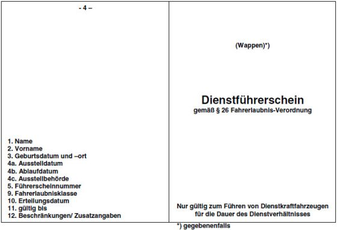

(Fundstelle: BGBl. I 2010, 2057 - 2062;
bzgl. der einzelnen Änderungen vgl. Fußnote)
I. Allgemeiner Führerschein
- 1.
Vorbemerkungen
Führerscheine werden als Kunststoffkarten nach Anhang I der Richtlinie 2006/126/EG hergestellt und im Auftrag der Fahrerlaubnisbehörde durch den vom Kraftfahrt-Bundesamt bestimmten und zertifizierten Hersteller zentral gefertigt. Hersteller ist die Bundesdruckerei GmbH. Die Herstellung, Personalisierung und Lieferung der Führerscheine erfolgt auf der Grundlage eines Rahmenvertrages zwischen dem Kraftfahrt-Bundesamt und der Bundesdruckerei GmbH. Näheres wird durch Verwaltungsvorschrift geregelt.
Der Führerschein besteht aus zwei Seiten.
- 2.
Beschreibung des Führerscheins
- 2.1
Seite 1 (Vorderseite)
Seite 1 enthält:
- a)
Die Bezeichnung „FÜHRERSCHEIN“ sowie deren Wiederholung in den Sprachen der Mitgliedstaaten der Europäischen Union als Unterdruck auf dem Führerschein.
- b)
Die Aufschrift „BUNDESREPUBLIK DEUTSCHLAND“ sowie das Zeichen der Europäischen Union (zwölf goldene Sterne in einem blauen Rechteck), in welches das Nationalitätszeichen D eingefügt ist.
- c)
Folgende Daten zum Inhaber des Führerscheins und zu seiner Fahrerlaubnis entsprechend der auf dem Führerschein aufgebrachten Nummerierung; Nummer 8 (Wohnort) ist nicht vorhanden, da die Angabe nach der Richtlinie 2006/126/EG fakultativ ist und im deutschen Führerschein nicht ausgewiesen wird:
- 1.
Name, Doktorgrad
- 2.
Vorname
- 3.
Geburtsdatum und -ort
- 4a.
Ausstellungsdatum gemäß § 24a
- 4b.
Datum des Ablaufs der Gültigkeit
- 4c.
Name der Ausstellungsbehörde
- 5.
Nummer des Führerscheins, die sich aus dem Behördenschlüssel der Fahrerlaubnisbehörde, einer von dieser fortlaufend zu vergebenden Fahrerlaubnisnummer sowie einer Prüfziffer und der Nummer der Ausfertigung des Dokuments zusammensetzt.
- 6.
Lichtbild des Inhabers
- 7.
Unterschrift des Inhabers
- 9.
Sämtliche, auch durch andere eingeschlossene Fahrerlaubnisklassen, die der Inhaber besitzt.
- 2.2
Seite 2 (Rückseite)
Seite 2 enthält:
- a)
folgende Daten zur Fahrerlaubnis des Inhabers entsprechend der auf dem Führerschein aufgebrachten Nummerierung:
- 9.
Sämtliche, auch durch andere eingeschlossene Fahrerlaubnisklassen, die der Inhaber besitzt. Nicht erteilte Klassen werden durch einen Strich entwertet.
- 10.
Das Datum der Erteilung der Fahrerlaubnis der jeweiligen Fahrerlaubnisklasse. Das Erteilungsdatum einzelner oder mehrerer Fahrerlaubnisklassen kann auch im Feld 14 unter Angabe der Nummer 10 eingetragen sein. In diesen Fällen wird in der Spalte 10 mittels „*)“ darauf verwiesen.
- 11.
Das Gültigkeitsdatum befristet erteilter Fahrerlaubnisklassen.
- 12.
Beschränkungen und Zusatzangaben (einschließlich Auflagen) zu den erteilten Fahrerlaubnisklassen in verschlüsselter Form gemäß Anlage 9. Beschränkungen und Zusatzangaben (einschließlich Auflagen), die nur für eine Fahrerlaubnisklasse gelten, werden in der Zeile der jeweiligen Klasse vermerkt. Solche, die für alle Fahrerlaubnisklassen gelten, werden in der letzten Zeile der Spalte ausgewiesen.
- 13.
Ein Feld für Eintragungen anderer Mitgliedstaaten nach Wohnsitznahme des Inhabers in diesem Staat.
- 14.
Ein Feld für die Eintragung des Erteilungsdatums der Fahrerlaubnis für eine oder mehrere Klassen (s. Nummer 10).
- b)
Die Erläuterungen zum Inhalt der Felder 1 bis 4c, 5 sowie 10 bis 12.
- 3.
Muster des Führerscheins (Muster 1)
II. Muster des Dienstführerscheins der Bundeswehr (Muster 2)
Farbe: hellgrau; dreifach gefaltet, Breite 4 x 74 mm, Höhe 105 mm; Typdruck
Vorderseite

Rückseite

III. Muster des Dienstführerscheins
der Bundespolizei und der Polizei (Muster 3)
Material: Neobond – 200 g/m2

IV. Muster für den Führerschein zur Fahrgastbeförderung (Muster 4)
Farbe: hellgelb; Breite 74 mm, Höhe 105 mm; Typendruck; vierseitig
Vorbemerkungen
- 1.
Anstelle der Streichung der nicht zutreffenden Berechtigungen können die zutreffenden Berechtigungen allein eingetragen werden; dann entfällt der Hinweis „*) Nichtzutreffendes streichen“.
- 2.
Geringfügige Abweichungen vom vorgeschriebenen Muster sind zulässig, soweit Besonderheiten des Verfahrens, insbesondere der Einsatz maschineller Datenverarbeitung, dies erfordern.
| (Vordere Außenseite) | (Hintere Außenseite) |
| |
| (Linke Innenseite) | (Rechte Innenseite) |
| |